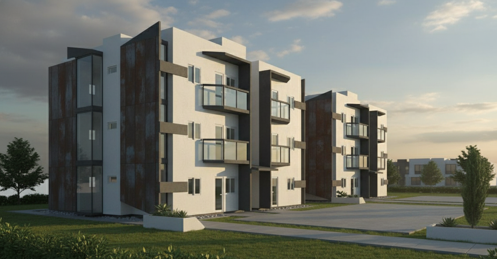

Ícaro Amaral
Engenheiro Civil • CREA 3000169646BA
Pós-Graduação em Perícias e Auditorias de Obras de Engenharia
Pós-Graduação em Perícia e Auditoria Ambiental
Pós-Graduação em Arquitetura Paisagística
Técnico em Edificações • Arquitetura & Urbanismo
Especialista em perícias de engenharia, assistência técnica judicial e fiscalização profissional de obras.
+62 Obras Fiscalizadas
Atendimento Nacional
Projetos Residenciais e Comerciais
Perícias de Engenharia • Assistência Técnica Judicial • Fiscalização Profissional • Atendimento Nacional
Laudos Periciais de Engenharia
Assistência Técnica Judicial
Fiscalização de Obras
Vistorias Técnicas
Inspeção Predial
Ensaios e Diagnósticos Estruturais
Especialista em Laudos Periciais, Assistência Técnica Judicial e Fiscalização de Obras
Atuação especializada em perícias de engenharia civil, elaboração de laudos técnicos, assistência técnica judicial, acompanhamento processual e fiscalização profissional de obras. Soluções técnicas voltadas para segurança, prevenção de prejuízos e suporte técnico em demandas judiciais e extrajudiciais em todo o Brasil.


